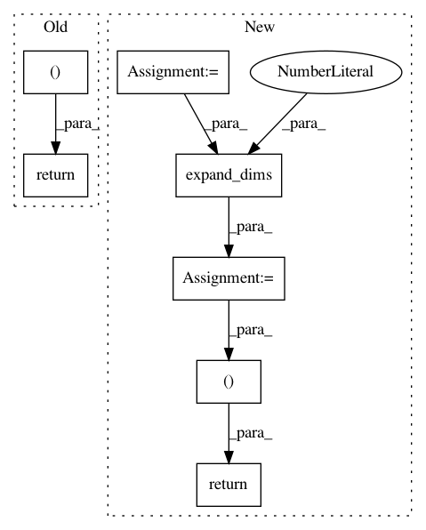

a677be4ce43130c024c8e0a48738fdb8d66b70ca,keras_retinanet/preprocessing/coco.py,CocoIterator,next,#CocoIterator#,59
Before Change
assert(batch_size == 1), "Currently only batch_size=1 is allowed."
boxes_batch = np.zeros((batch_size, 0, 5), dtype=keras.backend.floatx())
for batch_index, image_index in enumerate(selection):
coco_image = self.coco.loadImgs(self.image_ids[image_index])[0]
path = os.path.join(self.data_dir, self.set_name, coco_image["file_name"])
image = cv2.imread(path, cv2.IMREAD_COLOR)
image, image_scale = resize_image(image, min_side=self.image_min_side, max_side=self.image_max_side)
// copy image to image batch (currently only batch_size==1 is allowed)
image_batch = np.expand_dims(image, axis=0).astype(keras.backend.floatx())
// set ground truth boxes
annotations_ids = self.coco.getAnnIds(imgIds=coco_image["id"], iscrowd=False)
// some images appear to miss annotations (like image with id 257034)
if len(annotations_ids) == 0:
return self.next()
// parse annotations
annotations = self.coco.loadAnns(annotations_ids)
for idx, a in enumerate(annotations):
box = np.zeros((1, 1, 5), dtype=keras.backend.floatx())
box[0, 0, :4] = a["bbox"]
box[0, 0, 4] = a["category_id"]
boxes_batch = np.append(boxes_batch, box, axis=1)
// transform from [x, y, w, h] to [x1, y1, x2, y2]
boxes_batch[batch_index, :, 2] = boxes_batch[batch_index, :, 0] + boxes_batch[batch_index, :, 2]
boxes_batch[batch_index, :, 3] = boxes_batch[batch_index, :, 1] + boxes_batch[batch_index, :, 3]
// scale the ground truth boxes to the selected image scale
boxes_batch[batch_index, :, :4] *= image_scale
// randomly transform images and boxes simultaneously
image_batch, boxes_batch = random_transform_batch(image_batch, boxes_batch, self.image_data_generator)
// convert the image to zero-mean
image_batch = keras.applications.imagenet_utils.preprocess_input(image_batch)
image_batch = self.image_data_generator.standardize(image_batch)
return [image_batch, boxes_batch], None
After Change
// generate the label and regression targets
labels, reg_targets = anchor_targets(image, boxes_batch[0])
target = np.append(reg_targets, np.expand_dims(labels, axis=1), axis=1)
// convert target to batch (currently only batch_size = 1 is allowed)
target_batch = np.expand_dims(target, axis=0)
// convert the image to zero-mean
image_batch = keras.applications.imagenet_utils.preprocess_input(image_batch)
image_batch = self.image_data_generator.standardize(image_batch)
return image_batch, target_batch
In pattern: SUPERPATTERN
Frequency: 4
Non-data size: 7
Instances
Project Name: fizyr/keras-retinanet
Commit Name: a677be4ce43130c024c8e0a48738fdb8d66b70ca
Time: 2017-09-26
Author: j.c.gaiser@delftrobotics.com
File Name: keras_retinanet/preprocessing/coco.py
Class Name: CocoIterator
Method Name: next
Project Name: fizyr/keras-retinanet
Commit Name: 77d0a3413bf7e8666f643616a6b9e84fe3d9d893
Time: 2017-09-26
Author: yannhenon@gmail.com
File Name: keras_retinanet/preprocessing/pascal_voc.py
Class Name: PascalVocIterator
Method Name: next
Project Name: fizyr/keras-retinanet
Commit Name: 7aa12efda79a7ceb792788b89472ac359ec1db6c
Time: 2017-10-10
Author: e.liscio@fizyr.com
File Name: keras_retinanet/preprocessing/pascal_voc.py
Class Name: PascalVocIterator
Method Name: next
Project Name: fizyr/keras-retinanet
Commit Name: a94086602e92c75ae1ea660e69c10bef0129b35d
Time: 2017-10-06
Author: e.liscio@fizyr.com
File Name: keras_retinanet/preprocessing/coco.py
Class Name: CocoIterator
Method Name: next